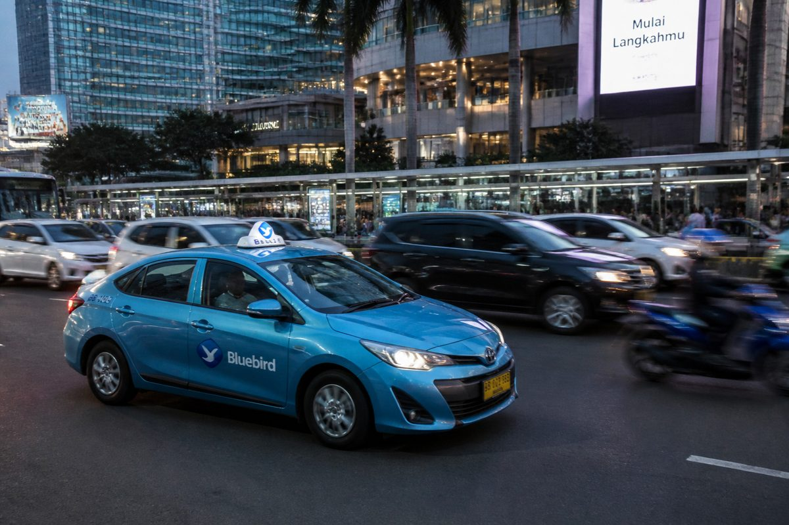

- Data Analytics
- Business Analysis
Taxi Demand & Fleet Utilization Analysis: Blue Bird
Analysis of Blue Bird taxi requests and driver shifts to find why drivers sit idle while customers go unserved, ending in KPI-based recommendations.
Context / Problem
- Blue Bird runs a conventional fleet with permanent drivers, so every hour a car sits empty is cost without revenue.
- At the same time some customers could not get a taxi, and corporate clients questioned how eVouchers were being used.
- Goal: find out why many drivers sit idle while some requests go unfulfilled, using six MySQL tables from October to December 2023 (pair project).
Key Findings
- Failed requests cluster in the CBD at peak hours: 36.6% failed at 07:00–08:59 and 17:00–18:59, against 5.5% at other hours. Those four hours hold 45.6% of all failures.
- Drivers are very idle: 1.26 trips per shift on average and 30.6% of shifts with no trips at all.
- Location matters more than pool: the Airport has 21.8% of shifts but only 12.6% of requests, and 51% of Airport shifts had no trips.
- 65.9% of Airport eVoucher trips happen at night or on weekends, against 22.6% for other trips. This is a pattern to verify, not proof of misuse.
Impact / Recommendations
- Pilot shift scheduling that puts more drivers in the CBD during the two peak windows, measured against the 36.6% failure rate.
- Trial moving some Airport shifts to the CBD at peak hours to cut empty shifts.
- Verify weekend and night eVoucher trips against client travel policies before drawing conclusions.
- Track trips per shift weekly by zone so management can see whether changes work.